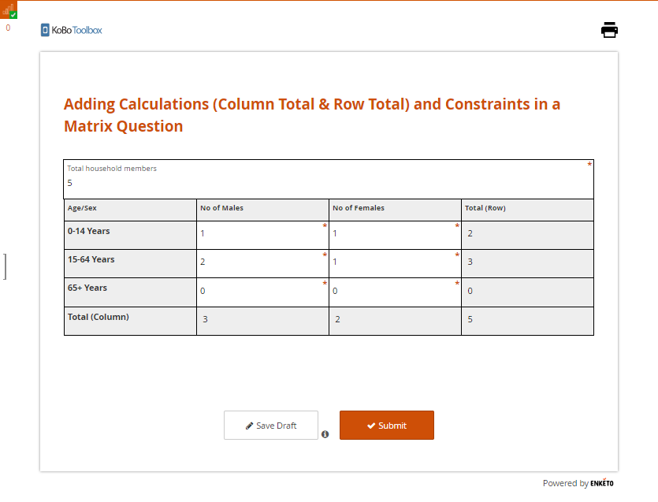

Search the knowledge base, browse our resources, and visit our forum for more detailed information
Last updated: 28 Oct 2025
Leer en español | Lire en français | اقرأ باللغة العربية
Last updated: 14 Apr 2022
When working in the formbuilder, it is simple to add calculations or constraints to almost any question type. While the formbuilder does not currently support adding these features to a matrix question, you can use XLSForm to do so. The steps listed below in this support article will illustrate how you can add calculations and constraints to a matrix question using XLSForm.
Step 1: Create a matrix question in the formbuilder
The first step is creating a matrix question in the formbuilder (as outlined in the support article Question Matrix Response Type). Simply add rows and columns with the variables necessary for data collection.
Step 2: Download the form as XLSForm
Once the matrix question has been created, SAVE the form and download it as an XLSForm.
Step 3: Add logic to the matrix question
Open the XLSForm and add calculation, constraint and constraint_message
column headers. With these column headers, you will be able to add the column
total and row total expressions under the calculation column header. You
can also add appropriate constraints under the constraint column header and
constraint message under the constraint_message header as needed.
Additionally, you may also choose to add a read_only column header to restrict
enumerators from editing the responses while collecting data to certain
questions (for example, the row total and column total that gets
calculated).

In the image above, you may notice that the name inputs are
shorter. In this example, they have been renamed from the ones auto-generated
in the formbuilder to capture the entire screenshot of the survey tab. If you
choose to rename yours, make sure to use your new variable names in the
calculation and constraint column headers. If the
form has already been deployed and data has been collected, it is recommended
that you do not rename the existing variables.
Step 4: Replace form
Upload and replace your XLSForm within the existing project, or create a new project (if needed).
Step 5: Deploy form
Step 6: Collect data
After deploying the form, you can go to FORM>Collect Data>OPEN to start collecting data with the web form.
The following images illustrate how the form will look and function in the Enketo web form after the above steps have been followed:
No data is entered:

An input error is made:

Here you will see that there are only five total household members. If an enumerator enters 6 for the number of males (0-14 Years), the constraint will show an error message.
No input errors:

Here, when you enter values in a matrix table, the rows and columns are automatically calculated.
You can download the XLSForm that was used for this article here.
The matrix question only works with Enketo web forms. It is not supported with the KoboCollect Android App.
The matrix table will appear distorted if you fail to set the layout to Grid-theme. For more details on web form appearances, you can refer to Using Alternative Enketo Web Form Styles.
Did you find what you were looking for? Was the information clear? Was anything missing?
Share your feedback to help us improve this article!